This package contains source components, i.e., blocks which have only output signals. These blocks are used as signal generators for Real, Integer and Boolean signals.
All Real source signals (with the exception of the Constant source) have at least the following two parameters:
| offset | Value which is added to the signal |
| startTime | Start time of signal. For time < startTime, the output y is set to offset. |
The offset parameter is especially useful in order to shift the corresponding source, such that at initial time the system is stationary. To determine the corresponding value of offset, usually requires a trimming calculation.
| Name | Description |
|---|---|
| Set output signal to a time varying Real expression | |
| 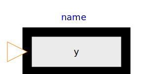 IntegerExpression | Set output signal to a time varying Integer expression |
| Set output signal to a time varying Boolean expression | |
| 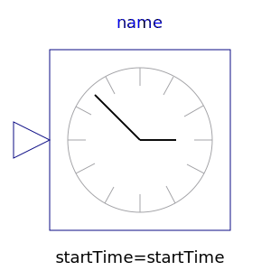 Clock | Generate actual time signal |
| 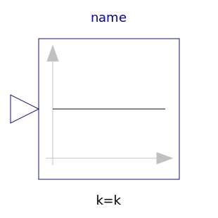 Constant | Generate constant signal of type Real |
| 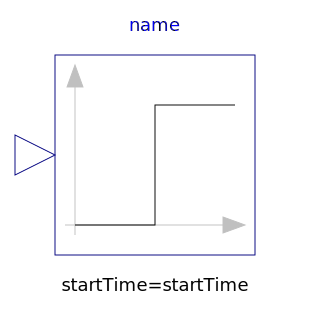 Step | Generate step signal of type Real |
| 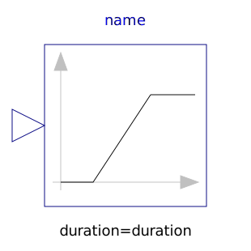 Ramp | Generate ramp signal |
| 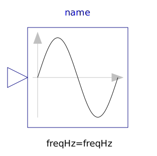 Sine | Generate sine signal |
| Generate cosine signal | |
| 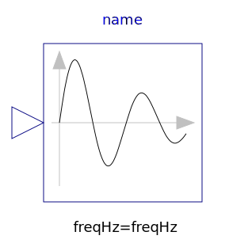 ExpSine | Generate exponentially damped sine signal |
| Generate a rising and falling exponential signal | |
| 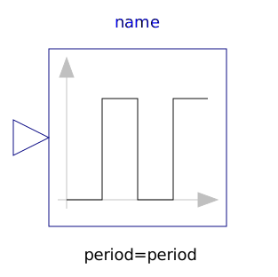 Pulse | Generate pulse signal of type Real |
| 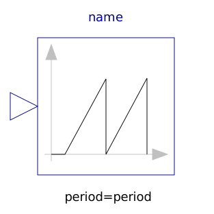 SawTooth | Generate saw tooth signal |
| 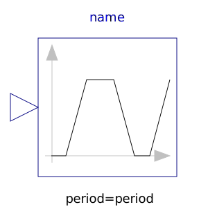 Trapezoid | Generate trapezoidal signal of type Real |
| Move as fast as possible along a distance within given kinematic constraints | |
| Move as fast as possible from start to end position within given kinematic constraints with output signals q, qd=der(q), qdd=der(qd) | |
| 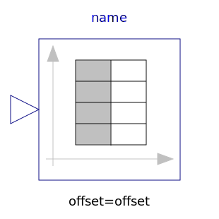 TimeTable | Generate a (possibly discontinuous) signal by linear interpolation in a table |
| 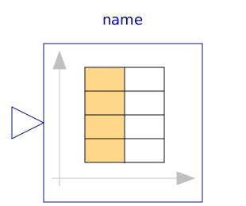 CombiTimeTable | Table look-up with respect to time and linear/periodic extrapolation methods (data from matrix/file) |
| Generate constant signal of type Boolean | |
| 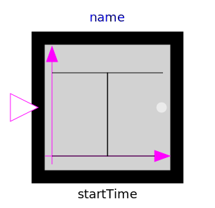 BooleanStep | Generate step signal of type Boolean |
| 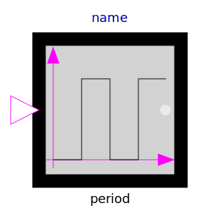 BooleanPulse | Generate pulse signal of type Boolean |
| Generate sample trigger signal | |
| Generate a Boolean output signal based on a vector of time instants | |
| Boolean signal source that mimics a radio button | |
| 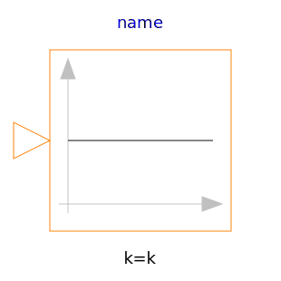 IntegerConstant | Generate constant signal of type Integer |
| Generate step signal of type Integer | |
| Generate an Integer output signal based on a table matrix with [time, yi] values |